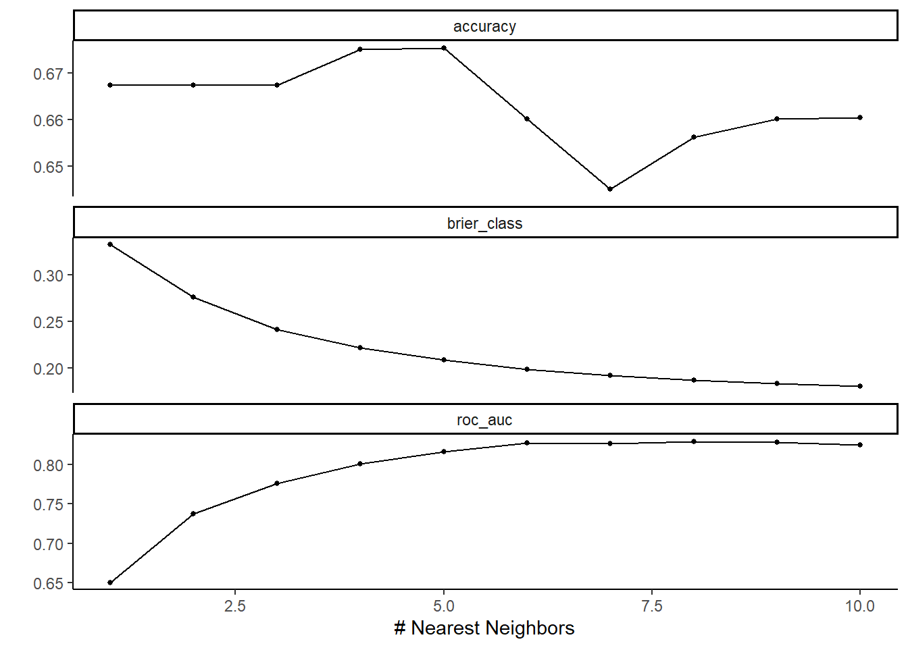

library(palmerpenguins)library(tidymodels)library(tidyverse)library(ISLR2)library(dplyr)library(ggplot2)library(plotly)library(MASS)library(discrim)library(ggpubr)library(klaR)theme_set(theme_classic())tidymodels_prefer()penguins = palmerpenguins::penguinspenguins =na.omit(penguins) #Eliminates rows with N/A values
Training and Testing Data
As before, split the data into testing and training sets. As before, this is an 80/20 split and the proportion will be maintained for each of the three islands.
Here, the test accuracy is only 0.706. This indicates that, on the test data set, the model was about 71% accurate. In order to improve the accuracy, try different models.
Quadratic Discriminant Analysis
Quadratic discriminant analysis is similar to linear discriminant analysis in that it also seeks to find combinations of the predictors that separate two or more classes, but unlike LDA, these combinations are allowed to be non-linear.
Here, the test accuracy is actually a little lower than LDA at 0.676. Next, try naive Bayes.
Naive Bayes
Naive Bayes relies on Bayes’ Theorem, which is a method to find conditional probability. The reason that Naive Bayes is “naive” is because it assumes independence, or in other words, the presence of a particular feature in a class is unrelated to the presence of any other feature.
For this model, the accuracy is 0.735, which is the best of the three models so far. Next, try k-nearest neighbors modeling.
K-Nearest Neighbors with Cross Validation
K-nearest neighbors attempts to predict the class of a given point based off of the k nearest neighbors. With this model, use k-fold cross validation to determine the optimal number of neighbors to consider.
First, define the parameter to tune (in this case, the number of neighbors) and create the workflow.
Visualizing the results of the tune. The metric that the models will be evaluated on will be accuracy, though these plots also display other metrics that can be used.
Code
autoplot(tune_res)

Select the best value for k, finalize the workflow, and fit the final model. In this case, k=5 was optimal for accuracy.